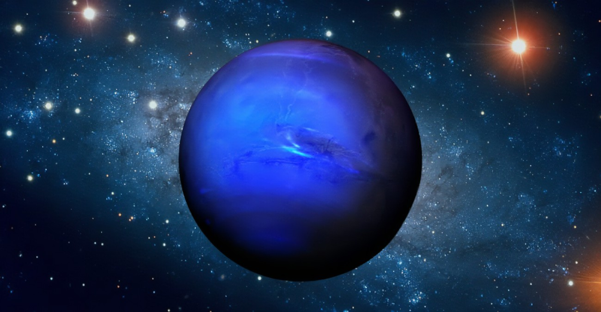

Los físicos que intentan descubrir de esta manera las leyes de la naturaleza se llaman «físicos teóricos». Hay físicos experimentales muy brillantes a quienes no les interesa demasiado teorizar. Un ejemplo es Albert Abraham Michelson, que inventó el interferómetro e hizo medidas muy exactas de la velocidad de la luz.

saturno
Planeta helado
Mi planeta favorito
Albert Abraham Michelson (Strzelno, Polonia, 19 de diciembre de 1852 - Pasadena, Estados Unidos, 9 de mayo de 1931)1 fue un físico estadounidense, conocido por sus trabajos acerca de la velocidad de la luz. Recibió el Premio Nobel de Física en 1907, fue el primer estadounidense en obtener el premio en la disciplina de ciencias. 2
Destacado estudioso del electromagnetismo y física óptica su trabajo más notable fue el experimento de Michelson-Morley, reconocido por Albert Einstein como base de la Teoría de la relatividad.31